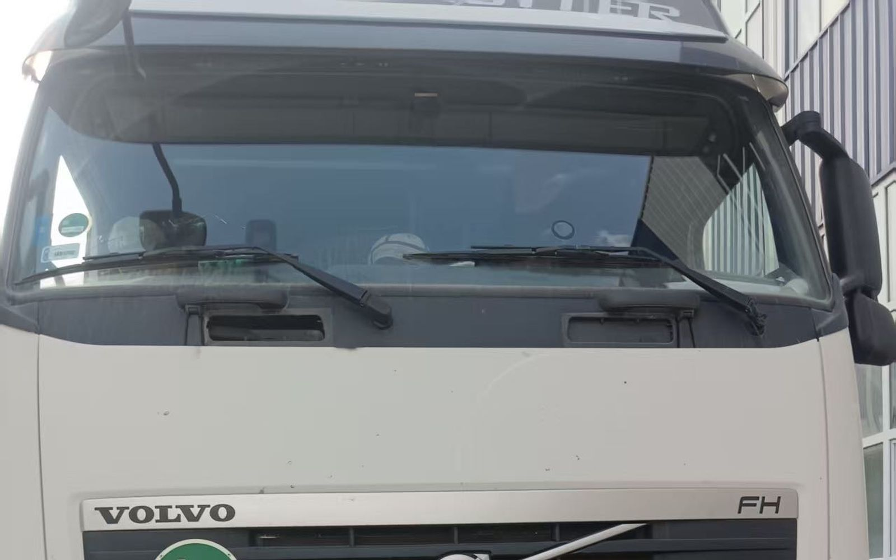
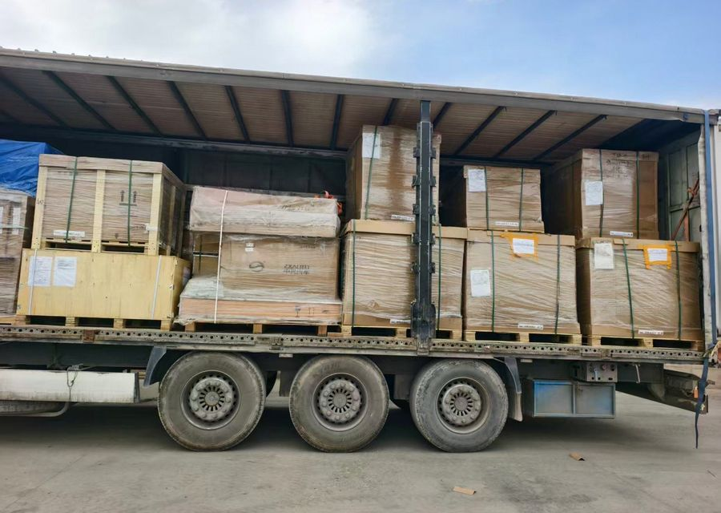

VEHICLES
整车 / 新能源车出口中亚与伊朗
2025 年霍尔果斯口岸出口汽车约 45 万辆，同比 +6.9%，创新高（新浪财经，2026-01）。新疆全年出口商品车 17.8 万辆，八成走霍尔果斯，新能源车领先。整车出口的门槛和走法，跟一般杂货不一样。
- 霍尔果斯 2025 出口汽车约 45 万辆（+6.9%），全国最大商品车出口陆路口岸
- 整车出口要：3C、一致性证书 CoC、随车单证；部分车型 / 目的国涉及出口许可
- 整车多走商品车铁路专列 + 框架箱 / 滚装，不是篷布整车 / 零担
- 本站承运一般货（汽配、电子、机械、建材）；整车、新能源车、工程机械项目另询

01 口岸：整车以霍尔果斯为主
2025 年新疆出口商品车 17.8 万辆，80% 经霍尔果斯出境；伊尔克什坦（乌恰）也有商品车，量小。目的国以中亚五国、俄罗斯为主。发伊朗的整车走的是同一条中亚通道，再转伊朗。霍尔果斯是铁路 + 公路口岸，商品车出口以铁路专列为主。
02 单证：比杂货多几样
3C（强制性产品认证）：出口整车一般需要。一致性证书 CoC（Certificate of Conformity）：目的国常要，用于上牌和清关。出口许可 / 配额：部分车型、部分目的国涉及，第一条就问清。随车单证：合格证、发票、装箱单、VIN 清单。新能源车带动力电池，按危化 / 特殊货申报，别当普通整车报。
03 走法：专列 + 框架 / 滚装，不是篷布车
整车出口主流是商品车铁路专列（JSQ 车）、框架箱或滚装，一次一批。跟本站跑的篷布整车 / 零担是两种服务：装法、计费、单证、时效都不同。少量整车塞进篷布车不划算，也有固定和申报问题。

04 常见误区
「整车比杂货好发」——反了，门槛更高、单证更多、排期更紧。「新能源车就是普通整车」——带电池，按特殊货申报。「到中亚就等于到伊朗」——中亚是过境国，发伊朗整车仍要清关代理和目的城场站交接。「22 天」——那是本站篷布整车到德黑兰场站的口径，整车专列另算。
本站承运整车 / 零担的一般货：汽配、电子、机械、建材。整车、新能源车、工程机械项目另询——发四样：货名（车型 / 数量）；件数、重量、尺寸；目的城；乌恰或霍尔果斯。
相关：新疆出境口岸怎么选 · 乌恰还是霍尔果斯 · 新疆卡车发伊朗怎么询